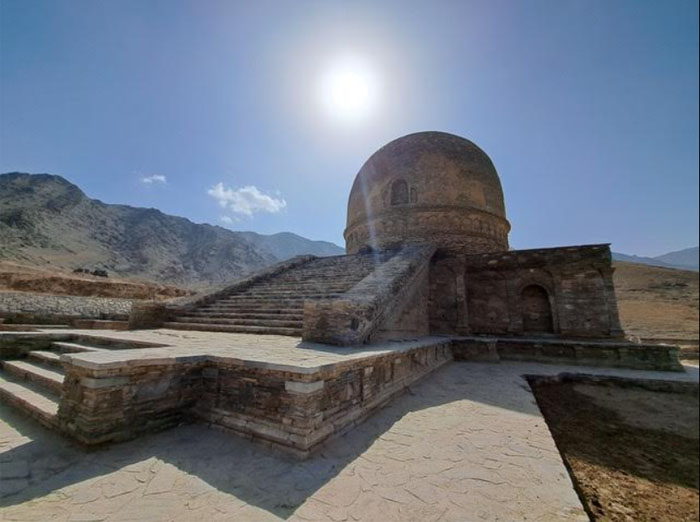
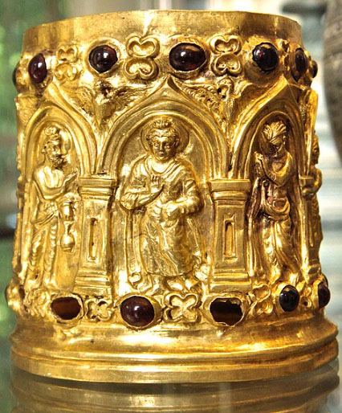
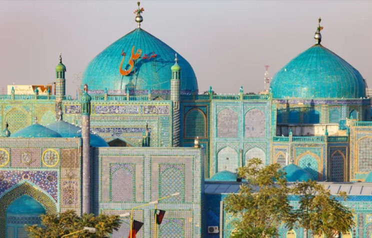
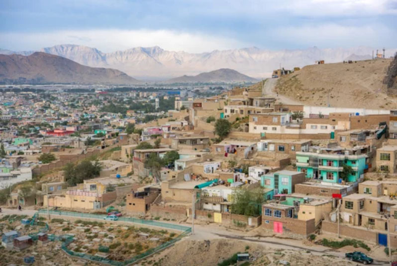
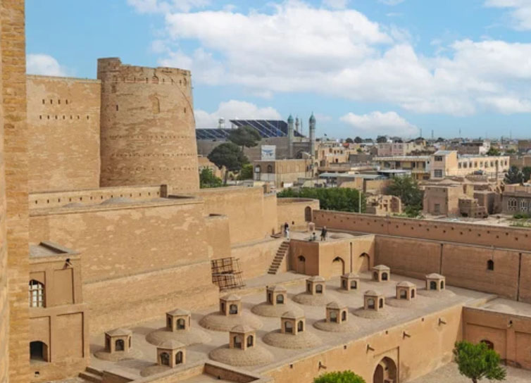
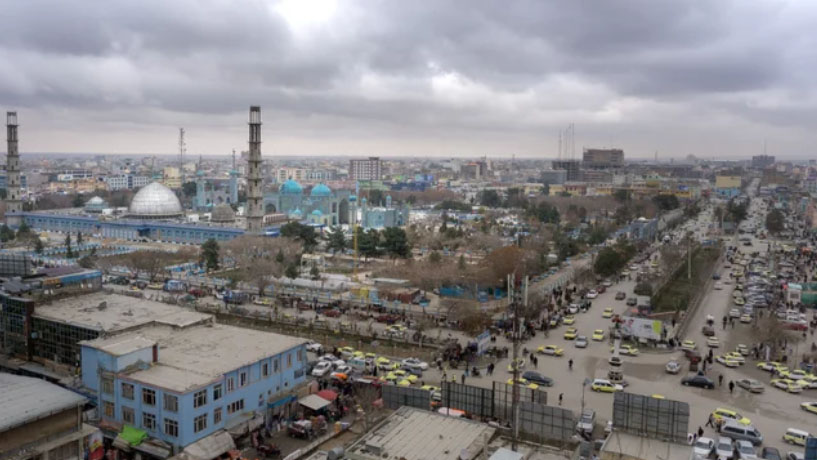
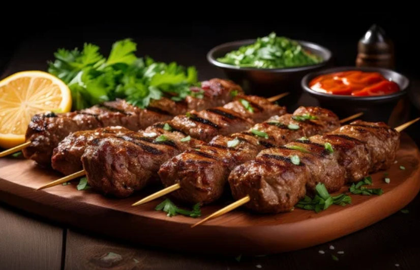

Beneath the Roof of the World
Afghanistan: Where Mountains Touch the Silk Road
Home to the Pamir Plateau, often called the “Roof of the World,” Afghanistan is a land where breathtaking natural grandeur meets the enduring legacy of the Silk Road. From towering peaks to ancient trade routes, explore its most iconic destinations region by region.
Ancient Stone & Eternal Silence
Iconic Landmarks
Sacred Roots & Modern Wonders: A journey through Afghanistan’s timeless spiritual soul, where ancient stone meets celestial blue

Topdara Stupa
Standing as one of the largest and best-preserved Buddhist monuments in Afghanistan, this stupa is a majestic remnant of the Kushan Empire. Its massive stone structure, set against the rugged hills of Parwan, reflects the spiritual grandeur and architectural precision of ancient Gandhara.

Bimaran Stupas
Famous for the discovery of the exquisite gold Bimaran Casket, these stupas represent a pivotal era where Hellenistic art met Buddhist devotion. Though now in ruins near Jalalabad, they remain a site of immense historical significance, marking the very beginning of depicting the Buddha in human form.

Mausoleum of Imam Ali (Blue Mosque)
Known as the "Blue Mosque" of Mazar-i-Sharif, this shrine is a masterpiece of Islamic architecture adorned with thousands of shimmering turquoise tiles. It is a vibrant spiritual heart where the intricate mosaic patterns and peaceful courtyards create an atmosphere of divine beauty and profound serenity.
Ancient Crossroads & Living Cities
Cities of Distinction
From the bustling bazaars of Kabul to the serene courtyards of Herat and the spiritual heart of Mazar-i-Sharif, discover cities where centuries of history meet everyday life.

Kabul
Where the rugged peaks of the Hindu Kush guard the beating heart of a modern nation.

Herat
A timeless mosaic of Silk Road history, blooming with the elegance of blue-tiled minarets.

Mazar-e-Sharif
A shimmering oasis of devotion, where white doves fly under the glow of the Blue Mosque.
Culinary Echoes of the Silk Road
A vibrant fusion of Persian spice and Central Asian soul. From the smoky aroma of charcoal-grilled Kebabs to the comforting pull of hand-stretched Laghman, these dishes are a testament to a resilient heritage, perfectly balanced by the cooling mist of mint-infused Doogh.

Kebab
Savor juicy lamb infused with cumin and rock salt—charcoal-grilled to embody the very passion of Afghanistan.
Laghman
A noodle tradition carried along the Silk Road—where a rich sauce of vegetables and lamb entwines with firm, hand-pulled noodles
Doogh
A refreshing touch of mint with a hint of salt—a palate-cleansing magic. An essential desert wisdom after rich, hearty meat dishes.
アフガニスタン・イスラム共和国の歴史
Islamic Republic of Afghanistan
From the gold of the ancient Silk Road to the haunting echoes of Soviet steel, Afghanistan stands as a monumental crossroads of human history. For millennia, this resilient land of rugged mountain kingdoms has witnessed the rise and fall of empires—where Alexander the Great, Persian kings, and nomadic conquerors once met. Though carved by the turbulent currents of conflict, its timeless landscapes endure, guarded by a proud people whose fierce independence and unbreakable spirit survive through the ages.
古代
アケメネス朝ペルシア（紀元前6世紀 - 紀元前330年）
キュロス大王が東方に領土を拡大し、アフガニスタン地域を支配。
マケドニア王国（紀元前330年 - 紀元前323年）
アレクサンドロス大王がアフガニスタンを征服し、ヘレニズム文化を導入。
セレウコス朝 （紀元前312年 - 紀元前250年頃）
アレクサンドロスの後継者による支配。バクトリア地方を含む。
グレコ・バクトリア王国（紀元前250年頃 - 紀元前130年頃）
ギリシア系王国が成立し、東西文化が融合。
クシャーナ朝（紀元前1世紀 - 3世紀）
仏教が広まり、ガンダーラ美術が栄える。
サーサーン朝ペルシア（224年 - 651年）
アフガニスタン西部を支配。ゾロアスター教が広まる。
中世
イスラム帝国 （ウマイヤ朝・アッバース朝）（651年 - 9世紀頃）
アラブ人による征服でイスラム教が定着。
サーマーン朝（819年 - 999年）
中央アジアを中心にペルシア文化が復興。
ガズナ朝（977年 - 1186年）
アフガニスタンを拠点にインド北部まで勢力を拡大。
ゴール朝（1148年 - 1215年）
ガズナ朝を滅ぼし、広範囲を支配。
モンゴル帝国（13世紀）
チンギス・ハーンの侵攻により、アフガニスタンは征服される。
ティムール朝（1370年 - 1507年）
文化が栄え、ヘラートが学問と芸術の中心地となる。
近世
ムガル帝国（1526年 - 1857年）
アフガニスタンを拠点にバーブルがインドで建国。
ドゥッラーニー朝（1747年 - 1823年）
アフガニスタンの統一を達成し、現在の国土の基盤を築く。
近現代・現代
アフガニスタン王国 （1823年 - 1973年）
イギリスとロシアの緩衝地帯として独立を維持。
アフガニスタン共和国（1973年 -1978年 ） 1973年のクーデターにより王政が廃止
1973年、アフガニスタンでは国王ザーヒル・シャーの従兄弟であるムハンマド・ダーウード（ダウト）が主導するクーデターが発生しました。当時、国王が病気療養のためイタリアに滞在していた隙を突いたダーウードは、軍を動かして実権を掌握し、王制の廃止を宣言しました。この歴史的転換により、200年以上続いた「アフガニスタン王国」は終焉を迎え、ダーウードを初代大統領とする「アフガニスタン共和国」が誕生することとなりました。以降、アフガニスタンは激動の時代を迎えます。
アフガニスタン民主共和国（1978年 -1992年 ）1978年共産主義の始まり
1978年：共産主義クーデター（四月革命）
1989-1992: 共産政権（ナジブラ） vs ムジャヒディン諸派の戦い
1992年まで: 国名は「アフガニスタン民主共和国（または共和国）」。中身はソ連が作った共産政権。
アフガニスタン・イスラム国（1992年 -1996年 ）
ソ連からの莫大な資金援助が続いていたことと、敵であるムジャヒディン側がバラバラでまとまりがなかったため、ソ連が去った(1989年)後もナジブラ政権は3年間も持ちこたえました。1991年にソ連自体が崩壊し、援助が完全にストップ。ナジブラ政権はついに終焉を迎えました。1992年に「アフガニスタン・イスラム国」が誕生しました。
1992-1996: ムジャヒディン諸派同士の凄まじい内戦
1992年から: 国名は「アフガニスタン・イスラム国」。中身はアメリカやサウジが支援したムジャヒディンの連立政権。
アフガニスタン・イスラム首長国（1996年 -2001年 ）
（2001年から2004年までは暫定政権）。
アフガニスタン・イスラム共和国（2004年 -21年 ）
アフガニスタン・イスラム首長国（現タリバン政権）（2021年 -現在 ）
1. 1978年：共産主義クーデター（四月革命）
ソ連の影響を受けた共産主義政党が、ダウト大統領を殺害して政権を奪取。
内容: 急進的な近代化（宗教の否定、土地改革）を強行。結果: 伝統を重んじる地方の民衆が猛反発し、国内で内戦が勃発。
2. 1979年〜1989年：ソ連軍の侵攻
混乱する共産政権を助ける名目で、ソ連軍が直接軍事介入。イスラムの戦士たち「ムジャヒディン」が各地でゲリラ戦を展開。
介入: ソ連を弱体化させるため、アメリカ（CIA）やサウジアラビアがムジャヒディンに巨額の援助を行いました。
3. 1989年〜1996年：泥沼の内戦
ソ連軍撤退後、共通の敵を失った派閥同士がカブールを舞台に権力争いを開始。
惨状: かつて「中央アジアのパリ」と呼ばれた美しい街並みが、身内同士の砲撃でガレキの山と化しました。
4. 1996年〜2001年：旧タリバン政権の誕生
軍閥の略奪に絶望した民衆の前に、「秩序とイスラムの正義」を掲げる学生集団タリバンが登場。
統治: 治安は回復したものの、女性の教育禁止や公開処刑など、厳格なイスラム法による極端な恐怖政治が始まりました。
5. 2001年〜2021年：アメリカとの戦争
9.11テロの黒幕を匿ったとしてアメリカが攻撃を開始。タリバンを追放し、民主的な「アフガニスタン・イスラム共和国」が誕生しました。
試み: 女性の権利も回復しましたが、汚職や地方の不安定さは解消されないままでした。
6. 2021年〜現在：タリバンの再掌握
アメリカ軍の撤退に伴い、タリバンが電撃的にカブールを制圧し、再び統治を開始しました。
現在: 女性の権利は再び剥奪され、国際的な孤立と深刻な経済危機に直面しています。
アフガニスタン考～ミニスカートがロングスカートだったら～
実は、まさにその「見た目のギャップ」が、後の悲劇を加速させた側面があると言われています。
1970年代にソ連が介入する前のアフガニスタン（特にムハンマド・ザヒル・シャー国王の時代）は、今とは全く違う姿でした。
「中央アジアのパリ」: 当時のカブールは、女性がミニスカートを履いて大学に通い、西洋の音楽やファッションが日常にある、非常にリベラルで平和な都市でした。
「ヒッピー・トレイル」: 欧米の若者たちがバックパッカーとして訪れるほど治安が良く、観光資源（バーミヤンの大仏やヘラートの遺跡）も大切にされていました。
カブールの「ミニスカート」は、当時のアフガニスタンが近代化している象徴でしたが、同時に「都市と地方の断絶」の象徴でもありました。
もし「ロングスカート」のままだったら… もし、当時の知識層や王室が、もっと伝統的な価値観（ロングスカートやスカーフなど）を尊重しながら、「イスラムの教えを守りつつ、教育や医療を充実させる」という、中庸な近代化を進めていたら、歴史は変わっていたかもしれません。
地方の反感を買わなかった: 地方の保守的な農村部の人々にとって、カブールの自由なスタイルは「西洋に魂を売った不謹慎なもの」に見えてしまいました。それが、後の過激な宗教勢力の「共感」を集める理由になってしまったのです。
「急進すぎた」反動: ソ連もアメリカも、その国の土壌（伝統）を無視して、自分たちのイデオロギーを急激に植え付けようとしました。その反動として、タリバンのような極端な「揺り戻し」が起きてしまいました。
近代化の「作法」
イランもそうですが、急激に「西洋化」を進めようとすると、伝統を重んじる人々との間に深い溝ができてしまいます。その溝を、外部の勢力（ソ連やCIA）が利用してしまったのがアフガニスタンの悲劇の正体かもしれません。 「ロングスカート」のように、伝統を否定しない緩やかな変化であれば、大国につけ込まれる「心の隙」を作らずに済んだのかもしれない……。そう考えると、文化のバランスを取ることの難しさを痛感します。